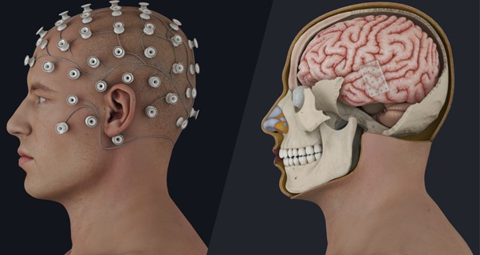

Gallery


What if you could turn the lights off with a thought, change the channel on the TV, or get a computer to speak for you? This isn't science fiction - it's happening right now with Brain Computer Interfaces (BCIs). As BCI technology keeps getting better, we're learning all the amazing things it can do. Whether it's helping with simple daily tasks or giving paralyzed people new ways to communicate, we'll examine both the good and bad sides of these futuristic devices, plus the big ethical questions they raise.
Our website shows how BCIs fit into our world today and what they might do tomorrow. We'll explain how different BCIs work and how they could change our future, from helping those with the greatest needs to adding convenience for everyone else.
Learn MoreWe're exploring every possibility for this exciting new technology.
Brain-Computer Interfaces (BCIs) enable direct communication between the brain and external devices. They are transforming medicine, accessibility, and the way we interact with technology.
 See Gallery